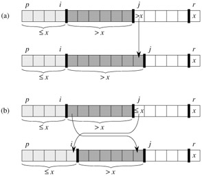

|
|
< Day Day Up > |
|
Quicksort is a sorting algorithm whose worst-case running time is Θ(n2) on an input array of n numbers. In spite of this slow worst-case running time, quicksort is often the best practical choice for sorting because it is remarkably efficient on the average: its expected running time is Θ(n lg n), and the constant factors hidden in the Θ(n lg n) notation are quite small. It also has the advantage of sorting in place (see page 16), and it works well even in virtual memory environments.
Section 7.1 describes the algorithm and an important subroutine used by quicksort for partitioning. Because the behavior of quicksort is complex, we start with an intuitive discussion of its performance in Section 7.2 and postpone its precise analysis to the end of the chapter. Section 7.3 presents a version of quicksort that uses random sampling. This algorithm has a good average-case running time, and no particular input elicits its worst-case behavior. The randomized algorithm is analyzed in Section 7.4, where it is shown to run in Θ(n2) time in the worst case and in O(n lg n) time on average.
Quicksort, like merge sort, is based on the divide-and-conquer paradigm introduced in Section 2.3.1. Here is the three-step divide-and-conquer process for sorting a typical subarray A[p ‥ r].
Divide: Partition (rearrange) the array A[p ‥ r] into two (possibly empty) subarrays A[p ‥ q - 1] and A[q + 1 ‥ r] such that each element of A[p ‥ q - 1] is less than or equal to A[q], which is, in turn, less than or equal to each element of A[q + 1 ‥ r]. Compute the index q as part of this partitioning procedure.
Conquer: Sort the two subarrays A[p ‥ q -1] and A[q +1 ‥ r] by recursive calls to quicksort.
Combine: Since the subarrays are sorted in place, no work is needed to combine them: the entire array A[p ‥ r] is now sorted.
The following procedure implements quicksort.
QUICKSORT(A, p, r) 1 if p < r 2 then q ← PARTITION(A, p, r) 3 QUICKSORT(A, p, q - 1) 4 QUICKSORT(A, q + 1, r)
To sort an entire array A, the initial call is QUICKSORT(A, 1, length[A]).
The key to the algorithm is the PARTITION procedure, which rearranges the subarray A[p ‥ r] in place.
PARTITION(A, p, r) 1 x ← A[r] 2 i ← p - 1 3 for j ← p to r - 1 4 do if A[j] ≤ x 5 then i ← i + 1 6 exchange A[i] ↔ A[j] 7 exchange A[i + 1] ↔ A[r] 8 return i + 1
Figure 7.1 shows the operation of PARTITION on an 8-element array. PARTITION always selects an element x = A[r] as a pivot element around which to partition the subarray A[p ‥ r]. As the procedure runs, the array is partitioned into four (possibly empty) regions. At the start of each iteration of the for loop in lines 3-6, each region satisfies certain properties, which we can state as a loop invariant:
At the beginning of each iteration of the loop of lines 3-6, for any array index k,
If p ≤ k ≤ i, then A[k] ≤ x.
If i + 1 ≤ k ≤ j - 1, then A[k] > x.
If k = r, then A[k] = x.
Figure 7.2 summarizes this structure. The indices between j and r - 1 are not covered by any of the three cases, and the values in these entries have no particular relationship to the pivot x.
We need to show that this loop invariant is true prior to the first iteration, that each iteration of the loop maintains the invariant, and that the invariant provides a useful property to show correctness when the loop terminates.
Initialization: Prior to the first iteration of the loop, i = p - 1, and j = p. There are no values between p and i, and no values between i + 1 and j - 1, so the first two conditions of the loop invariant are trivially satisfied. The assignment in line 1 satisfies the third condition.
Maintenance: As Figure 7.3 shows, there are two cases to consider, depending on the outcome of the test in line 4. Figure 7.3(a) shows what happens when A[j] > x; the only action in the loop is to increment j. After j is incremented, condition 2 holds for A[j - 1] and all other entries remain unchanged. Figure 7.3(b) shows what happens when A[j] ≤ x; i is incremented, A[i] and A[j] are swapped, and then j is incremented. Because of the swap, we now have that A[i] ≤ x, and condition 1 is satisfied. Similarly, we also have that A[j - 1] > x, since the item that was swapped into A[j - 1] is, by the loop invariant, greater than x.

Figure 7.3: The two cases for one iteration of procedure PARTITION. (a) If A[j] > x, the only action is to increment j, which maintains the loop invariant. (b) If A[j] ≤ x, index i is incremented, A[i] and A[j] are swapped, and then j is incremented. Again, the loop invariant is maintained.
Termination: At termination, j = r. Therefore, every entry in the array is in one of the three sets described by the invariant, and we have partitioned the values in the array into three sets: those less than or equal to x, those greater than x, and a singleton set containing x.
The final two lines of PARTITION move the pivot element into its place in the middle of the array by swapping it with the leftmost element that is greater than x.
The output of PARTITION now satisfies the specifications given for the divide step.
The running time of PARTITION on the subarray A[p ‥ r] is Θ(n), where n = r - p + 1 (see Exercise 7.1-3).
Using Figure 7.1 as a model, illustrate the operation of PARTITION on the array A = 〈13, 19, 9, 5, 12, 8, 7, 4, 11, 2, 6, 21〉.
What value of q does PARTITION return when all elements in the array A[p ‥ r] have the same value? Modify PARTITION so that q = (p+r)/2 when all elements in the array A[p ‥ r] have the same value.
Give a brief argument that the running time of PARTITION on a subarray of size n is Θ(n).
|
|
< Day Day Up > |
|